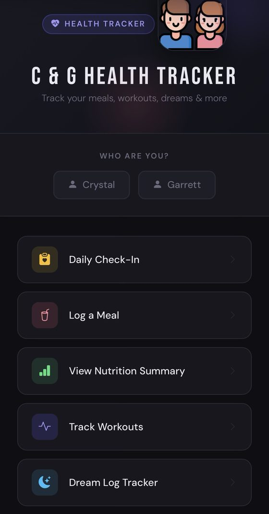

C&G Health Tracker
A Flask app my wife and I use every day to track meals, workouts, sleep, hydration and how we're actually doing. Five modules, one Azure SQL database, no subscription, and nothing sold to anyone.
Live, in daily use
Sole developer
—
Two

Why it exists
We wanted one place to track everything health-related — meals, workouts, sleep, hydration, and how we're actually doing. Everything on the market was single-user, gated behind a subscription, or covered three of our five needs and padded the rest with things we'd never open. Building it was faster than continuing to look.
What it does
- Daily check-in. A one-minute log with optional 1–5 scales for mood, anxiety and energy, quick chips for what helped that day, and a free-text journal. The history view shows trend averages, and everything exports to CSV.
- Meals and nutrition. Search a food database, log a meal, and get a daily nutrition summary. When the database doesn't have something, an LLM call estimates the nutrition from a plain description of what you ate.
- Workouts. Plan a session by muscle group, add exercises and sets, record weight and reps per set, and review the history for any exercise with demo animations.
- Dream log. Records dreams alongside sleep quality and which sleep aids were used, so it's possible to see whether any of them correlate with anything.
- Water. Hydration logging with presets, because the fastest possible path is the only one that gets used.
How it's built
Python 3.12 and Flask 3.1, talking to an Azure SQL database through
pyodbc and ODBC Driver 18. Served by gunicorn on Azure App
Service. The front end is vendored Bootstrap 5 with a custom dark theme layered over it,
rendered through Jinja templates. Infrastructure is Bicep, so the whole
environment provisions and deploys with azd up.
It started from Microsoft's Flask-on-App-Service quickstart. The deployment scaffolding from that sample is still in the repo and still works — everything above it is mine.
Notes from building it
The check-in module has the most interesting schema: a log table, a coping-strategies lookup, a junction table between them, and a view that flattens the whole thing for the trend queries. Normalising it properly meant the summary view stayed simple instead of turning into a pile of string parsing.
There's no migration framework. Schema changes are numbered .sql files run
by hand, with one file kept as the current source of truth. For a two-person app that's
the right amount of process — but it's the first thing I'd replace if anyone else ever
had to deploy it.
What I'd change
Authentication. Right now you pick a name on the home page and see that person's data. That's fine for a private deployment on a trusted network and it's why this app isn't linked from anywhere — the journal in particular is sensitive. Real access control is the prerequisite for it ever being exposed.
Connection handling. Connections open and close per request, and a query that raises currently skips its close. Harmless at two users, wrong at twenty.
The nutrition estimates are estimates. They come from a language model reading a description of a meal. Close enough to be useful, not close enough to be trusted, and the UI should say so more loudly than it does.
Let's talk.
Open to data science and applied ML roles in San Diego or remote.